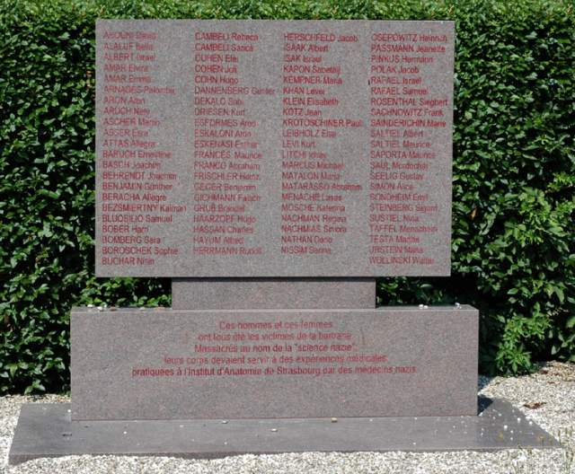
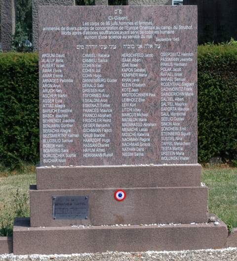
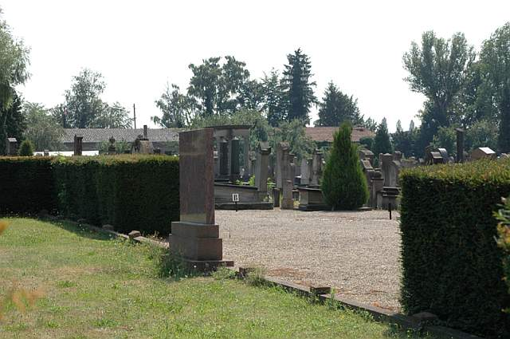

|
· Background · Database · Acknowledgements · Searching the Database |
On July 30, 1943, Ahnenerbe, a SS organization, arranged for the shipment of 86 Jews, men and women, from Auschwitz to Natzweiler-Struthof in Alsace, France. After arrival there on August 2, 1943 these Jews were then murdered in the gas chamber and their still warm bodies given to the university in Strasbourg for the "research purposes" of the Nazi doctor August Hirt. With the approach of the Allied troops, these bodies, preserved in formalin, were hidden deep in the basement of the Anatomy Institute, where they were discovered. The fact that their numbers were still visible enabled the years of research to give them back their identity and names.
The Natzweiler-Struthof (called Natzweiler for short) concentration camp, the only camp built by the Nazis on French soil, is one of the least known camps. Located initially in Schirmeck near Natzweiler, about 50 kilometers south of Strasbourg in Alsace, it was established in 1940 as a forced labor camp, primarily for local opponents of the German occupation. Late in 1941 the SS moved in and established a camp in Natzweiler to mine a nearby granite quarry. Gradually other sub-camps were established, but the total number of prisoners remained small until late 1942. However, by 1943 the scope of the camp was expanded into southwest Germany and dozens of small sub-camps were established. At its peak it probably held 19,000 prisoners and a total of 46,000 prisoners were registered as prisoners at some time or other until its evacuation in September 1944. As Allied troops approached, many of the prisoners were forced on marches eastward, during which many died.
Initially Natzweiler held few Jews, but in 1944 larger numbers arrived there, transferred from Auschwitz and other East European camps.
This collection of names, totaling 86, was taken from a collection held at the United States National Archives in College Park, Maryland. The extent of information on individual prisoners varies, but generally includes prisoner number, nationality, family and given name. In many cases a notation is included giving a date of death or other camp to which the prisoner was transferred.
Hans-Joachim Lang spent years of research chronicling this event and identifying the 86 victims. In his book, Die Namen der Nummern (The Names of the Numbers), Hoffmann and Campe, 2004, ISBN 3-455-09464-3, he describes how he was successful in this endeavor, and he provides brief biographical sketches of each of the victims.
While the number of victims is small, they illustrate a significant problem faced by researchers seeking to compile Holocaust victim lists. Many, perhaps most, simply take deportation/transport lists and assume that, since the persons on these lists did not return, they must have perished in the destination camp. For example, all the Germans included among the 86 whose names appear in the German Government's Gedenkbuch are listed as "verschollen" (vanished, assumed dead) in Auschwitz. Yet none died in Auschwitz. Similarly, none of the Dutch, Greek, Belgian or French Jews in this collection is listed in relevant reference books or on the Yad Vashem, USHMM, or JewishGen websites as having died in Natzweiler. The moral of this story: never stop looking.
In late November 2005 the remains of these individuals were removed to the Jewish cemetery of Cronenbourg, on the outskirts of Strasbourg, where they were finally given a respectful burial in consecrated ground, under the auspices of the Communauté Israélite of Strasbourg, the Consistoire of the Bas-Rhin, and Grand Rabbi Abraham Deutsch. In addition, at a ceremony on December 11, 2005, an austere dark stone memorial engraved with the names of the 86 victims was placed there. An additional memorial plaque honoring the victims was place outside the Anatomy Institute at Strasbourg's University Hospital.
Those readers who do not have access to this book may look at the author's website, www.Die-Namen-der-Nummern.de for information on the victims, in both German and English.
 |
This is a photograph of the Memorial stone at the Anatomy Institute in Strasbourg, France. The translation of the paragraph at the bottom is: "These men and women were all the victims of barbarity. Massacred in the name of "Nazi science" their bodies were to have served for the medical experiments carried out at the Anatomy Insititute of Strasbourg by the Nazi physicians." |
 |
This is a photograph of the monument placed in the Cronenbourg-Strasbourg cemetery. The material at the top reads: "Here lie the bodies of 86 men and women taken from several concentration camps in Eastern Europe to the camp in Struthof. Dead after atrocious suffering, having acted as guinea pigs in the name of a science in the service of evil." |
 |
This is general view of an entry to the Cronenbourg-Strsbourg cemetery which shows the rear of the memorial stone at the entrance. |
This database includes 86 victims. The fields of the database are as follows:
We wish to offer our thanks and appreciation to Peter Landé of the USHMM for his assistance in obtaining the permission for us to place this data online, and to Dr. Pierre Kogan, of Strasbourg for his assistance in the translation of some of the material. Also our thanks to the photographer, Henri Gallin, of Strasbourg, who took the pictures of the Memorial stones, which he has kindly donated to the Yizkor book project. And our deep gratitude goes to Hans-Joachim Lang both for his persistence in the research to identify these remains, and his generosity in permitting us to place this online on JewishGen.
In addition, thanks to JewishGen Inc. for providing the website and database expertise to make this database accessible. Special thanks to Warren Blatt and Michael Tobias for their continued contributions to Jewish genealogy. Particular thanks to the Research Division headed by Joyce Field and to Nolan Altman, coordinator of Holocaust files.
Rosanne Leeson & Peter Landé
August 2006
This database is searchable via JewishGen's Holocaust Database.
Copyright ©2008 JewishGen, Inc.
Last Update: 21 Oct 2007 by MFK